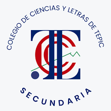

Propuesta de comunicación digital para CCLT Secundaria. Mostrar cómo se vive la escuela, con experiencias reales, no con publicidad.

Posicionar a CCLT Secundaria como una institución que acompaña el desarrollo académico, social y personal de sus alumnos. Cada contenido fortalece la confianza de las familias y el sentido de pertenencia de los estudiantes.
Buscan una secundaria confiable y una propuesta completa. Necesitan información clara y evidencias de acompañamiento.
Deben verse reflejados en una comunidad activa donde descubren sus capacidades.
Quieren conocer la propuesta, las actividades, los espacios y los canales oficiales de información.
Mensajes breves, concretos y centrados en experiencias. Sin frases exageradas, promesas absolutas ni lenguaje excesivamente comercial. #SomosCiencias se usa como identidad y comunidad, nunca de forma mecánica.
Comunidad, amistades, convivencia y experiencias cotidianas.
Laboratorio, experimentación, proyectos, pensamiento lógico e innovación.
Disciplina, autonomía, comunicación, valores y preparación para el futuro.
Música, danza, teatro, creatividad y descubrimiento de talentos.
Trabajo en equipo, constancia, coordinación y superación personal.
Atención psicopedagógica, confianza, escucha y espacios seguros.
Laboratorio, centro de tecnología, canchas, alberca y espacios de aprendizaje.
Propuesta educativa, proceso de ingreso, solicitud de información y visitas.
Titulares breves y contundentes, bloques azules de alto contraste, cápsulas de categoría, espacio negativo y curvas institucionales discretas.
Los textos secundarios se mantienen claros y legibles, con jerarquía visual evidente entre titular, apoyo y llamada a la acción.
Tres por semana (lunes, miércoles y viernes), cada una con su adaptación a Stories. Feed y Stories de cada fecha. Toca cualquier pieza para verla en grande.
Las fotografías de esta primera etapa están generadas con IA de forma temporal y se sustituirán por material real del colegio cuando esté disponible.
Pertenencia y comunidad. Ciencias, tecnología, deporte y arte muestran la vida diaria.
Acompañamiento, laboratorio y amistad. Se construye la confianza de las familias.
Formación, actividades y habilidades para el futuro, para cerrar con una invitación comercial moderada.
No se publican fechas, costos, promociones, descuentos, requisitos ni horarios sin validación institucional.